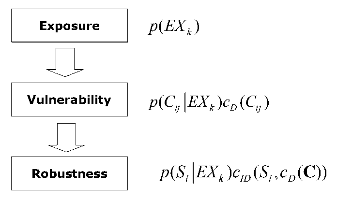
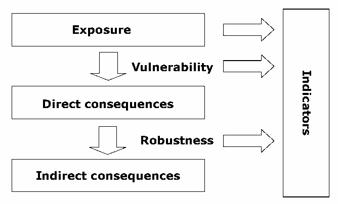
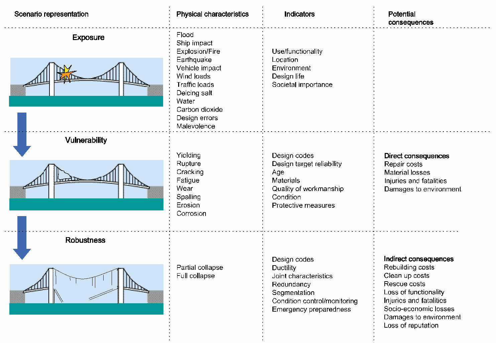
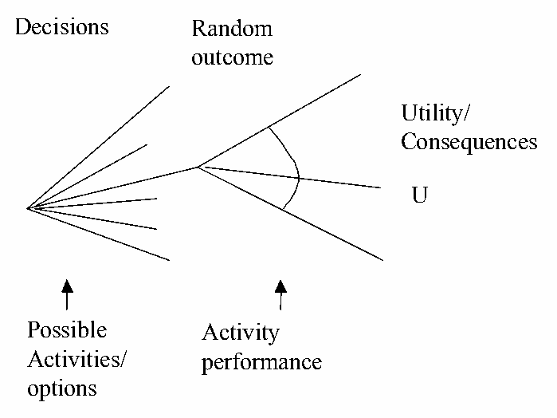
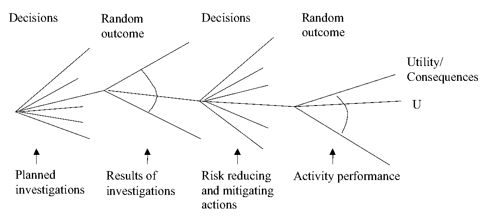
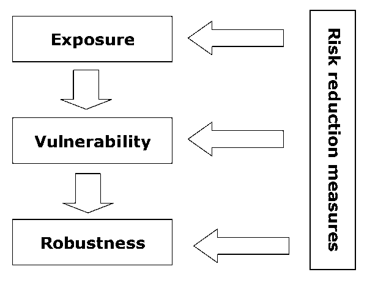
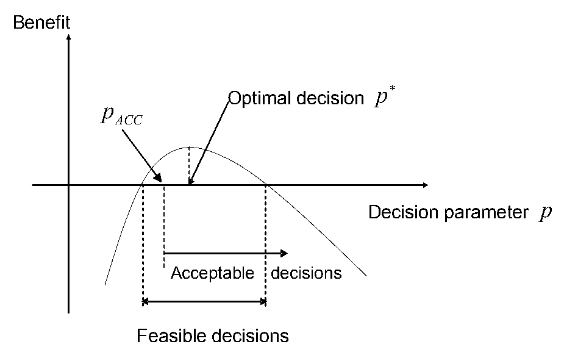
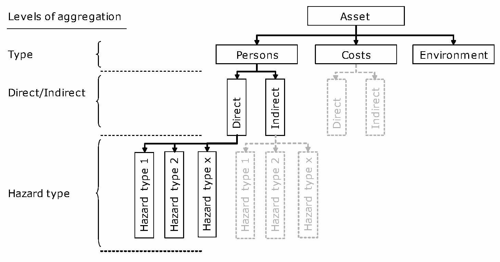
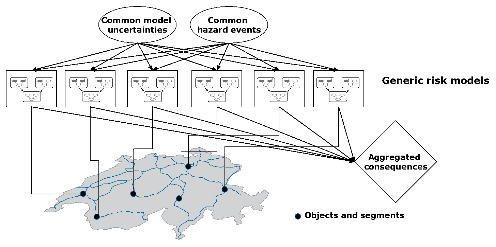

4 Risk Assessment#
4.1 Analysis and quantification of systems risk#
Within different application areas of risk assessment various rather specific methodologies have been developed and this has had the effect that risk assessments across the boundaries of application areas are difficult to compare and even more difficult to integrate. Numerous procedural schemes for risk based decision making are available, but these focus on the project flow of risk assessments rather than the framework for risk assessment itself. Moreover, one of the most significant drawbacks of existing frameworks for risk assessment is that they have not been developed from a Bayesian perspective, i.e. do not sufficiently facilitate and enhance the potential for utilizing evidence and/or indications of evidence in the assessment of risks. Therefore the generic risk assessment framework illustrated in Figure 9 is proposed. This framework facilitates a Bayesian approach to risk assessment and full utilization of risk indicators.
The risk \(R_E\) associated with one particular event \(E\) is assessed through the product between the probability \(p_E\) that the event takes place and the consequences \(c_E\) associated with the event, i.e.:
Risks must be related to a time frame \(T\), such as e.g. one year. Therefore it often is relevant to consider the risks associated with the number of a specific type of event \(n(T)\) within the considered time frame \(T\). In that case Equation (1) is appropriately written as:
where \(P(n(T)=i)\) is the probability of \(i\) events of the considered type within the time frame \(T\) and \(c\) is the consequence associated with the occurrence of one event. However, Equation (2) may also conveniently be written as:
where \(E[n(T)]\) is the expected number of events of the considered type within the time frame \(T\). The expected number of events may be established by integration over the rate of occurrences \(\nu\) as:
For different applications either of the two different formulations of risk may be convenient i.e., Equation (1) or (3).
As risks are normally associated with scenarios of events it is important to be able to quantify either the probability or the rate of occurrence of the scenarios, and this in general necessitates a probabilistic modeling involving conditional probabilities or rates respectively. In the following only the presentation for the quantification of risks is shown on the basis of probabilities, however, it could equally well have been presented in terms of rates.
In Figure 9 the asset which is considered subject to a risk assessment is assumed to be exposed to hazardous events (exposures \(EX\)) with probabilistic characterization \(p(EX_k),\ k=1,n_{EXP}\), where \(n_{EXP}\) denotes the number of exposures. It is assumed that the considered asset includes \(n_{CON}\) individual constituents, each with a discrete set of component damage states \(C_{ij},\ i=1,2..n_{CON},\ j=1,2..n_{C_i}\), where \(n_{C_i}\) is the total number of different damage states of constituent \(i\). The probability of direct consequences \(c_D(\mathbf{C}_l)\) associated with the \(l^{th}\) of \(n_{CSTA}\) possible different state of damage of all constituents \(\mathbf{C}_l\), conditional on the exposure event \(EX_k\) is described by \(p(\mathbf{C}_l\mid EX_k)\) and the associated conditional risk is \(p(\mathbf{C}_l\mid EX_k)c_D(\mathbf{C}_l)\). The vulnerability of the asset is defined through the risk due to all direct consequences (for all \(n_{CON}\) constituents) which may be assessed through the direct risk \(R_D\), i.e. the expected value of the conditional risk due to direct consequences over all \(n_{EXP}\) possible exposure events and all constituent damage states \(n_{CSTA}\):
The vulnerability is then quantified through the index \(I_V\) as:
where \(V_A\) is the attribute utilized to measure the value of the direct risk, e.g. the monetary value of the constituents of the considered system, the number of lost human lives or the quantified qualities of the environment.

Using this definition of vulnerability in the context of management of risks provides a clear representation of the expected value of immediate monetary losses, e.g. the amount of economic resources which should be allocated for renewal of societal infrastructure. It might also provide an assessment of loss of lives and damages to the qualities of the environment on the short term; however, provides little information about how the consequences are contained over both time and geography. To assess these additional consequences the indirect consequences must be considered carefully.
The functionality of the considered asset depends on the state of the constituents. It is assumed that there are \(n_{SSTA}\) possible different states of the constituents \(S_m\) associated with indirect consequences \(c_{ID}(S_m,c_D(\mathbf{C}_l))\). The probability of indirect consequences conditional on a given state of the constituents \(\mathbf{C}_l\), the direct consequences \(c_D(\mathbf{C}_l)\) and the exposure \(EX_k\), is described by \(p(S_m\mid\mathbf{C}_l,EX_k)\). The corresponding conditional risk is \(p(S_m\mid\mathbf{C}_l,EX_k)c_{ID}(S_m,c_D(\mathbf{C}_l))\). The risk due to indirect consequences is assessed through the expected value of the indirect consequences in regard to all possible exposures and constituent states, as:
The robustness of a system may be quantified by means of a robustness index \(I_R\) expressed through the ratio between direct risks and total risks, i.e.:
which allows for an assessment of decisions in regard to their effect on robustness.
In the foregoing, no mention was made in regard to the time reference period to which the probabilities and consequently also the risks have to be related. A clear specification of these is of course necessary as this will influence the decision making, the assessment of risk acceptance as well as the general modeling of uncertainties as well as the assessment of probabilities.
The definition of the system is of tremendous significance in the definition of exposure, vulnerability and robustness. However, in common practical engineering risk assessments the differentiation is rather straightforward. Considering e.g. structures, the exposures would typically include loads and aggressive chemical environments, the constituents would comprise the structural members and joints, direct consequences would relate to the marginal consequences of damage or failure of each individual structural member and joint, and finally the indirect consequences be related to e.g. collapse of the structure as well as impaired functionality.
In more general terms it is useful to think about a considered system in terms of constituents supporting some functions. Loss of functionality would in most cases constitute the main contribution to indirect consequences.
Finally, it should be mentioned that risks may be represented in various manners, including distribution functions of consequences, showing with what probability different ranges of consequences will occur. Other representations include density functions for risk estimates showing the uncertainty due to epistemic uncertainties. The best representation depends on the purpose of the risk assessment.
In case the risks are to be aggregated (see Section 4.8) with risks assessed in previous assessments, it is of course important that the risks are represented in a consistent manner, and very importantly that possible dependencies between the independently assessed risks are accounted for in the aggregation.
4.2 Indicators of risk#
The risk assessment framework allows for utilization of any type of quantifiable indicators in regard to the exposure, vulnerability and robustness of the considered system. Due to the hierarchical structure of the risk assessment, in terms of conditional events the framework is greatly supported by modern risk assessment tools such as e.g. Bayesian Probabilistic Nets and Influence Diagrams.
Risk indicators may be understood as any observable or measurable characteristic of the systems or its constituents containing information about the risk. If the system representation has been performed appropriately, risk indicators will in general be available for what concerns both the exposure to the system, the vulnerability of the system and the robustness of the system, see Figure 10.
In a Bayesian framework for risk based decision making, such indicators play an important role. Considering the risk assessment of a load bearing structure, risk indicators are e.g. any observable quantity which can be related to the loading of the structure (exposure), the strength of the components of the structure (vulnerability) and the redundancy, ductility, effectiveness of condition control and maintenance (robustness).

In Figure 11 the concept of indicators is illustrated considering the risk assessment of a suspension bridge.
The indicators listed in Figure 11 may readily be utilized for the purpose of Bayesian updating of the probabilities required in the risk assessment.
Considering e.g. updating of the probability that one particular constituent \(i\), is in a particular state \(j\), i.e. \(P(C_{ij})\) given the indicator \(e\) the updated probability \(P(C_{ij}\mid e)\) becomes:
where \(P(e\mid C_{ij})\) is the likelihood of the indicator.

4.3 Comparison of decision alternatives#
The basis for ranking different decision alternatives \(\mathbf{a}=(a_1,a_2,..,a_{n_d})^T\) is the corresponding risk or more generally the corresponding expected utilities \(E\!\left[U(a_j)\right],\ j=1,2,..n_d\):
where \(E[\cdot]\) is the expectation operator, \(n_{O_j}\) is the number of possible outcomes \(O_i\) associated with alternative \(a_j\), \(p(O_i\mid a_j)\) is the probability that each of these outcomes will take place (given \(a_j\)) and \(u(a_j,O_i)\) is the utility associated with the set \((a_j,O_i)\). This presentation assumes a discrete set of outcomes but can straightforwardly be generalized to continuous sample spaces. Considering the consequence modeling proposed in Section 4.1 Equation (10) can be rewritten as:
The simplest form of the decision analysis is the so-called prior-analysis. In the prior-analysis the expected utility is evaluated on the basis of statistical information and probabilistic modelling available prior to any decision and/or activity. The prior decision analysis is illustrated by a simple decision tree in Figure 12. In prior and posterior decision analysis the optimal decision \(a^*\in\mathbf{a}\) is identified from:
where \(U(\cdot)\) is the utility and \(\mathbf{X}\) is a vector of random variables representing all uncertainties influencing the decision problem, see also the decision/event tree in Figure 12.

Prior decision analysis thus forms the basis for the simple comparison of utilities associated with different activities and may therefore be applied for purposes of ranking and optimization.
Posterior decision analysis has the same form as prior decision analyses, however, changes in the branching probabilities and/or the utilities in the decision/event tree reflect that new evidence has been obtained or that the considered problem has been changed as an effect of changes of the system or the world surrounding the system.
Pre-posterior decision analysis may be illustrated by the decision tree shown in Figure 13.

Using pre-posterior decision analysis optimal decisions in regard to knowledge improvement may be identified. Furthermore, options are built in to the decision making to accommodate for subsequent adaptation of actions which are optimal subject to the improved knowledge. Such options may e.g. be formulated as decision rules \(d(\mathbf{z})\) which specify the line of action as a function of the achieved knowledge \(\mathbf{z}\).
In pre-posterior decision analysis the optimal decision \(a^*\in\mathbf{a}\) is identified from:
\(\prime\) and \(\prime\prime\) refer to the probabilistic description of the events of interest based on prior and posterior information respectively.
Decision analysis can be either formal or informal. Whereas in principle a formal decision analysis includes all possible branches in the decision event tree and accounts for all available knowledge, an informal decision analysis can be understood as an analysis where simplifications are performed either in the probabilistic modelling or in the representation of the event/decision tree. In general it is very difficult if not impossible a priori to assess the validity of decisions based on informal decision analysis and formal decision analysis should thus be the general aim.
The decision theoretical basis outlined in the foregoing may be readily applied for the identification of optimal decisions in regard to risk management. Following the framework outlined in Section 4.1, decisions may be related to how to reduce or avoid exposures, how to reduce vulnerability and how to improve robustness. In addition to this it is also possible and should be considered to formulate the decision problems as explicit functions of information (risk indicators) concerning the exposure, the vulnerability and the robustness which may become available at future times. Thereby the risk management process can be adapted to the available knowledge at any given point in time and optimized accordingly.
4.4 Risk perception#
Depending on the situation at hand, decision makers may feel uneasy with the direct application of expected utility as a basis for decision ranking due to principally two reasons: either the decision maker is uncertain about the assessment of the utility/consequence or about the assessment of the probabilities originating from the analysis of the performance of the system and its constituents.
This corresponds to not knowing the rules of the game (see Section 3) and can be seen as the main reason for the emergence of and recent implementation of the precautionary principle in societal decision making e.g. relating to new technologies. In principle the effect of misjudging the utility associated with a particular outcome corresponds to misjudging the probability that the outcome will occur, namely that possible outcomes associated with marginal utility are assessed wrongly. This may lead to both over- and under-estimation of the expected utility, which in turn would lead to different decisions. In order to make decisions which are conservative, decision makers therefore feel inclined to behave risk averse – i.e. give more weight in the decision making to rare event of high consequences (typically an event for which knowledge and experience is limited) compared to more frequent events with lower consequences (for which the knowledge and experience may be extensive); this may in turn lead to decisions biased towards not to engage in activities which actually could indeed be profitable.
From a personal perspective risk averse and even the opposite, risk prone behavior, is fully legitimate to the extent that it of course must represent the preferences of the decision maker.
However, from a societal perspective where important issues include the safeguarding of human lives and qualities of the environment, a non-neutral risk behavior is highly problematic and may lead to a non-uniform allocation of available resources depending on hazard types and different sectors of engineering. From the societal perspective and under the assumption that all relevant outcomes and all uncertainties have been included into the formulation of the utility function, this behavior is fundamentally irrational and also inappropriate. What is extremely important, however, is that the perception of the public and the corresponding societal consequences in case of adverse events is explicitly accounted for as a possible indirect consequence in the formulation of the utility function as illustrated in Figure 8.
Ideally, the public would be informed about risk based decision making to a degree where all individuals would behave as rational decision makers, i.e. not overreact in case of adverse events - in which case the risk averse behavior would be eliminated. This ideal situation may not realistically be achievable but should be considered as one possible means of risk treatment in risk based decision making.
It is a political responsibility that societal decisions take basis in a thorough assessment of the risks and benefits including all uncertainties affecting the decision problem. In some cases, however, due to different modeling assumptions, different experts in decision making may identify differing optimal decisions for the same decision problem. The problem then remains to use such information as a support for societal decision making.
4.5 Risk reduction measures#
The various possibilities for collecting additional information in regard to the uncertainties associated with the understanding of the system performance as well as for changes the characteristics of the system can be considered to comprise the total set of options for risk treatment. The risk treatment options may, in the context of risk based decision making, be considered the available decision alternatives. Risk treatment is decided upon for the purpose of optimizing the expected utility achieved by the decision making.
Following the previously suggested framework for risk assessment, risk treatment can be implemented at different levels in the system representation, namely in regard to the exposure, the vulnerability and the robustness, see Figure 14. Considering the risk assessment of a load carrying structure, risk treatment by means of knowledge improvement may be performed by collecting information about the statistical characteristics of the loading (exposure), the strength characteristics of the individual components of the structures (vulnerability) and by systems reliability of the structural system (robustness). The improved knowledge facilitates that decisions are optimized using the pre-posterior analysis outlined in Section 4.3.
Risk treatment through changes of the system characteristics may be achieved by restricting the use of the structure (exposure), by strengthening the components of the structure (vulnerability) and by increasing the redundancy of the structural system (robustness).

Options for risk treatment should in general be assessed and evaluated in terms of their risk reducing effect, i.e. their efficiency \(R_{RE}\) . This may be simply assessed through the reduction of total risks achieved through the measure \(\Delta R\) divided by the cost of the measure \(C_R\) , i.e.:
By assessing the efficiency of different measures of risk reduction, a prioritization of measures may be established for what concerns reduction of exposures, reduction of vulnerability as well as improvement of robustness for the situations before, during and after the vent of hazards.
4.6 Acceptance of risk#
It is generally accepted that the decisions in regard to the planning, design, execution, operation and decommissioning of societal infrastructure should take basis in an optimization of life-cycle benefits using principles of risk assessment as outlined in the foregoing.
However, in addition to risks due to economic losses the decision maker has to take into account also the risks to persons, as well as potential damages to qualities of the environment.
Whenever, on the basis of risk assessments, decision alternatives have been identified and ranked by comparing the expected value of benefits or losses, the risks must be considered in regard to their acceptability. It is suggested to differentiate between tangible and intangible risks, i.e. risks which may easily be expressed in monetary terms and risks which are not.
Intangible values especially concern loss of lives and injuries. Intangible values may, however, also include qualities of the environment. Such qualities could e.g. concern bio diversity. Which intangible values should be considered in a given case must be identified during the system identification.
As a general principle; the regulations in force for the different application areas must be fulfilled and it must be shown that risks are acceptable in accordance with these. Many existing regulations specify requirements to what is denoted individual risks and collective risks. Requirements to maximum individual risks aim to protect individuals, mostly in situations of occupational hazards. Collective risk acceptance criteria are generally applied in the context of societal planning, including codification. Here no particular differentiation is made in this regard, as the perspective is taken that risks for any individual at any given location engaged in occupational activities or exposed to hazards originating from societal infra-structures, buildings or activities should be limited according to the Societal Willingness To Pay (SWTP) to avoid fatalities.
For what concerns the assessment of the SWTP for reducing life and injury risks, an established practice and scientific basis does exist, see next section. In regard to other intangible values, such as loss of scenic beauty, noise and pollution, there is at present no firm scientific basis for addressing the societal acceptability of potential losses. However, it is important the all quantified risks are presented in a form which provides overview of all risks and facilitates risk communication. This will facilitate a differentiated and transparent selection of decision alternatives based on personal or political preferences.
In Figure 15 decisions are considered in terms of the continuous parameter \(p\). The benefit function is expressed only in economic terms. From this perspective, it is clear that only a certain range of the decision parameter \(p\) will yield a positive benefit; this range corresponds to feasible decisions. An example could relate to the choice of the thickness of the plate of a rock-fall protection gallery. There is a certain choice of \(p\), e.g. the thickness of the plate for which an incremental change of \(p\) is associated increments of losses and gains which are in balance; this is the optimal decision \(p\), shown in Figure 15 as \(p^*\) .

Having identified the optimal decision \(p^*\) , it is necessary to check whether this decision is admissible from the perspective of society. Following Figure 15 we need to assess the value of the decision parameters which exactly corresponds to the societal preferences in regard to investments into life saving activities; this value of \(p\) is denoted \(p_{ACC}\) . It is important to notice that acceptability thus not only depends on the level of risk itself but also the efficiency of risk reduction. Focus is thereby directed not only on the highest sources of risks but moreover on the risk reduction activities with the highest efficiency.
In general, the theoretical basis for the identification of risk acceptance are outlined in the background documentation to this document. In the following, however, the basic principles for setting acceptance criteria in regard to risks to persons are outlined.
Rational risk acceptance criteria in the context of societal decision making may be derived on the basis of socio-economic considerations. In this context, the issue of concern relates only to involuntary risks. It is assumed that risk reduction always is associated with reallocation of societal economic resources. In the context of societal infrastructure with a life time typically in the order of decades or centuries, it is expedient that such economic resources are allocated with the highest possible efficiency and with due consideration of intergenerational acceptability.
At the level of societal decision making an efficient life saving activity may be understood as a measure which in the most cost effective manner reduces the mortality or equivalently increases the statistical life expectancy.
The incremental increase in life expectancy through risk reduction, the corresponding loss of economic resources, measured through the Gross National Product (GNP) together with the time used for work, all assessed for a statistical life in a given society, form the most important building stones for the assessment of the efficiency of risk reduction measures. Based on these demographical indicators, the Life Quality Index (LQI) facilitates the development of risk acceptance criteria.
The underlying idea of the LQI is to model the preferences of a society quantitatively as a scalar valued social indicator, comprised by a relationship between the GDP pro capite \(g\), the expected life at birth \(\ell\) and the proportion of life spend for earning at living \(w\).
Based on the theory of socio-economics, the Life Quality Index can be expressed in the following principal form:
where the parameter \(r\) is a measure of the trade-off between the resources available for consumption and the value of the time of healthy life. Note that in some publications the LQI is referred to as a utility. However, it should not be understood as a utility in the Van Neumann/Morgenstern meaning of the word. Economists use this word in a wider sense.
In Equation (15) only the part of the GDP which is available for risk reduction investments is considered. This value \(g\) is estimated as 70% of the total GDP. Furthermore, the approach suggested by Cobb Douglas is followed whereby \(g\) is assumed to be proportional to a work related factor to the power \(\beta\) and a capital related factor to the power \((1-\beta)\). This means that g can be written as:
In assessing the value of \(\beta\) one should keep in mind that part of nowadays capital is based on work in the past and part of present day work is intended to raise capital for the future.
The value of \(r\) in Equation (15) cannot be inferred directly but may be estimated from the fraction of life actually allocated for economic activity. After substituting (16) into (15) the value of \(w\) for which \(L\) reached its maximum may be derived from the condition:
which leads to:
If \(\beta\) would be equal to 1.0 the value of \(r\) would be equal to \(w\). The parameter \(q\) is encountered in an alternative LQI expression: \(L=g^q\ell(1-w)/q\) .
In modern western economies the value of \(w\) is known to be about 0.10. If it is assumed that these economies have reached their stationery optimum and using \(\beta=0.7\) it may be found that the preference parameter \(r\) should have a value of about 0.13.
Every risk reduction measure will affect the value of the LQI. The consideration that any investment into life risk reduction should lead to an increase of the LQI leads to the following risk acceptance criteria:
or
A given measure with the purpose of reducing risks of life implies an allocation of \(\Delta g\) and a corresponding increase of life expectancy \(\Delta\ell\) . Based on Equation (20) the relationships between \(\Delta g\) and \(\Delta\ell\) which lead to increases in the LQI may be determined which in turn can be utilized for assessing the corresponding probability of different types of failures of relevance for a considered system; this probability may then be utilized as a target value for structural design or assessment purposes. Considering structural reliability applications, the relative change in life expectancy \(\Delta\ell/\ell\) may be exchanged by a change in mortality \(d\mu\) as:
where \(\nu\) is the failure rate, \(C_x\) a demographical economic constant corresponding to a given scheme \(x\) for mortality reduction and \(P_{D\mid F}\) is the conditional probability of dying given a failure. Finally there is:
where \(dC_y\) are the annual investments into life safety and \(N_{PE}\) is the number of persons exposed to the failure. In the Annex to this document the application of the LQI principle is outlined for typical cases in engineering decision making.
Finally it should be mentioned that refinements and alternative approaches to the above LQI model are possible. Reference to relevant literature are also provided in the Annex.
4.7 Sustainable discounting#
Discounting of investments may have a rather significant effect on decision making. Especially in the context of planning of societal infrastructure for which relative long life times are desired and for which also the costs of maintenance and decommissioning must be taken into account, the assumptions in regard to discounting are of importance. Considering time horizons of 20 to 100 years (i.e. over several generations), discounting should be based on long term average values, free of taxes and inflation. In the private sector, the long term real rate of interest is approximately equal to the return which may be expected from an investment. In the public sector the discounting rate, also in the context of life saving investments, should correspond to the real rate of economic growth pro capite. This corresponds to the rate at which the wealth of an average member of society increases over time.
4.8 Aggregation and portfolio loss assessment#
For the purpose of understanding, managing, documenting and communicating risks at a strategic level, aggregation of risks and portfolio loss assessments are often required. Indeed the aggregation of risks may be seen as the ultimate goal of establishing a uniform basis for assessing risks; only if risks are assessed in a comparable way it will be possible to aggregate them. Furthermore, beyond the mere summation of risks over the various activities and objects e.g. constituting a roadway network, the efficient management of risks necessitates the various attributes of the risks are also known. This concerns especially the uncertainty with which the risk estimates for the individual components and activities are associated, but also and not least, possible dependencies, or common factors.
It is preferable for the management of portfolio risks that uncertainties are made available in regard to the assessed risks at the level of objects/segments. Knowing the uncertainty associated with the portfolio risk allows for assessing the size of required budgets to cover potential losses in a rational manner. Furthermore, it supports decisions on how to collect more information or how to refine the portfolio risk analysis with the purpose of reducing the uncertainties associated with losses. Reducing the portfolio risk uncertainty will lead to less surprises in terms of exceeded budgets, and will provide a better basis for efficient allocation of societal resources in general.
Two types of aggregations are generally relevant for the management of risks, namely aggregated modeled risks and aggregated observed losses. The modeled risks correspond to the risks assessed through analysis in accordance with the guidelines contained in the present document. The aggregated observed losses correspond to the recorded losses observed in the past. The recorded data on losses may not cover all types of modeled risk, however, both types of aggregated risks are of relevance in risk management. Whereas the modeled risks may provide a differentiated and detailed overview of the portfolio risks as well as sensitivities of the risk in regard to different types of hazards, the significance of categories of objects, etc., the aggregated recorded losses are factual, though historical, and may and shall be utilized for the purpose of calibration of modeled risks.
The aggregation of risks may be performed at object/segment level as well as over object categories, geographical areas and hazard types. For all aggregations it is suggested to use a one year period as standard reference period. However, the temporal variations within a one year period can also be of interest.
Aggregation should be undertaken individually for the risk categories: persons, costs and environment, with an appropriate differentiation, e.g. for persons: Injuries and fatalities, for costs: User costs, compensation costs and material losses, for environment: \(\mathrm{CO}_2\) emissions, toxic releases and energy use.
At the level of individual assets the aggregation is made over risks due to different types of hazards, which for various reasons might be evaluated individually. The result of such an aggregation at asset level is illustrated in Figure 16, where only one risk type is illustrated for each object, differentiated into direct and indirect risks. However, in the aggregation all relevant risk components must be considered, i.e. including all relevant risks to persons, environment and costs.

The differentiation of direct and indirect risks (in the different categories) at the level of assets is useful in the aggregation over different types of hazards. This aggregation provides insight on how robust the considered asset is and thus points to a possible need to upgrade its performance in relation to its function in the context of the system. The robustness assessed for one object/segment or activity based on the risk aggregated over the different relevant hazards may be expressed through the asset robustness index \(I_{AR}\) :
Where \(R_{AD}\) and \(R_{AID}\) are the direct and indirect risks for the considered object/segment or activity aggregated over the relevant hazards.
At higher levels of aggregation, e.g. over object type or geographical areas the direct/indirect differentiation at object level is no longer relevant.
Knowledge in regard to the temporal variation of risks is useful for the purpose of budget planning, but also necessary as a means for decision making in regard to the focusing on risk reduction activities which may not be very critical for individual objects/segments and activities but due to their effect on the overall portfolio have a large aggregated effect. This could e.g. relate to activities such as de-icing and planning of roadway maintenance.
If risks are aggregated for which the uncertainty associated with the risk is known, the aggregated risk should be assessed, such that these uncertainties are reflected in the result. This necessitates that dependencies between the risks subject for aggregation are accounted for; a task which is generally non-trivial and necessitates careful modeling. However, hierarchical probabilistic models as illustrated in Figure 17 greatly facilitate such aggregation.

To assess the benefit of refining the level of knowledge in the overall management of risks, an assessment of the aggregated risk in regard to its dependency of knowledge uncertainties is a very strong means. Therefore, as a general rule, it shall be evaluated to what degree knowledge uncertainties influence the uncertainty associated with the aggregated risk. Such an evaluation may be performed qualitatively; however, in the process of refining risk aggregation models, a quantitative assessment is generally required. Quantitative evaluations necessitate that the uncertainty associated with the risks subject to aggregation are subdivided into their two components, knowledge uncertainty and inherent natural variability. Furthermore, such evaluations also require that the sources of the knowledge uncertainties are known and included in the risk models. This is greatly facilitated by the use of indicators in the formulation of the risk models as outlined in Section 4.2.
In the assessment of the portfolio risks, the value or significance of information may be conducted by artificially reducing the uncertainty associated with the uncertain parameters entering the various risk models. By doing this, the significance of the different parameters for the portfolio risk may be assessed in qualitative terms, providing an idea on the most important parameters. However, in the assessment of the efficiency of collection of information as a means of reducing portfolio risk uncertainty, it is necessary to account for the accuracy of various means of collecting information, as well as the costs of collecting information.
4.9 Risk transfer#
Risk transfer may be considered as a special case of risk treatment. A decision maker who is responsible for the management of risk may optimize his/her decision making with the purpose to reduce risks and/or maximize benefits as outlined in the foregoing. However, as emphasized previously; the outcome of the decision making is generally associated with uncertainty. For a decision maker with limited economic capabilities this uncertainty might be a problem, in the sense that losses could result from the decision making even though this, in expected value, is optimal. Such losses might be in excess of the economic capabilities of the decision maker and it is thus a central issue to take budget constraints into account directly in the decision making. The consequences of such event can be included into the formulation of the decision problem by using the concept of follow-up consequences outlined in Chapter 4. However, the risks associated with the event of excessive economic losses may also be managed by transferring this risk to a third party. Such risk transfers must generally be bought and this is typically the concept followed in the insurance and the re-insurance industry.
4.10 Risk communication#
Risk communication may just as risk transfer, be seen as one special means of treating risks. Different individuals and different groups of individuals in society perceive risks differently, depending on their own situation in terms of to what degree they may be affected by the exposures, to what degree they are able to influence the risks and to what degree the risks are voluntary. Generally risk are perceived more negatively when stake holders feel more exposed, when they feel they have no influence and they feel they are exposed to risks involuntary.
Another aspect is related to how adverse events are perceived by individuals and groups of individuals in society when and after such events take place. Again, this depends on the perspective of the affected individuals and groups of individuals. Furthermore, the occurrence of adverse events and the way the information about such events is made available will affect the perception of risks in general but also in many cases trigger actions which have no rational basis and only adds to the societal consequences of such event, see also Figure 8. To the extent possible such behavior should be included in the consequence assessment as a follow-up consequence.
Due to the effects of the perception of risk it is generally observed that different individuals and groups of individuals have different attitudes in regard to what risks can be accepted, moreover this attitude to a high degree is affected by the characteristics of the associated adverse events . Risk averse and risk prone attitudes are observed, which simply refers to the effect that risks are assigned different tastes depending these characteristics. Whereas such behavior is a private matter for individuals of society, it leads to an uneven distribution of risks, if exercised in the context of societal decision making and this is clearly unethical and from that perspective also not rational.
The perception of risks may be significantly influenced by information about the risks themselves. Information can and should be used as a targeted means of reducing potential losses caused by reactions to events beyond what is rational, seen in the perspective of normative decision making. Being provided with transparent information in regard to the nature of exposures, possible precautionary actions, information on how risks are being managed and the societal consequences of irrational behavior reduces uncertainties associated with the understanding of risks of individuals. This, in turn, adds to rational behavior and thereby reduces follow-up consequences. For this reason; schemes for targeted, transparent and objective information of the stakeholders is a highly valuable means of risk treatment.